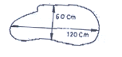
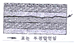
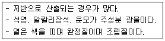
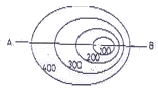
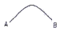
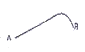
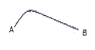
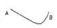

화약취급기능사 (2006-01-22 기출문제)
1과목: 화약 및 발파
1. 다음 중 혼합화약류에 속하지 않는 것은?
- T.N.T
- 흑색화약
- 초유폭약
- 카알릿
(정답률: 알수없음)

2. 암반분류 방법 중 Q-SYSTEM은 6가지 매개변수를 사용하여 수치적으로 분류하여 암반의 등급을 결정하고 갱도크기에 적합한 지보형태를 구하기 위한 것이다. 여기에 사용된 6가지 매개변수에 해당하지 않은 것은?
- 암질지수
- 절리군의 수
- 지하수에 의한 계수
- 불연속면의 방향
(정답률: 알수없음)
3. 다이나마이트를 장기간 저장하면 NG과 NC의 클로이드화가 진행되어 내부의 기포가 없어져서 다이나마이트는 둔감하게 되고 결국에는 폭발이 어렵게 된다. 이와 같은 현상을 무엇이라 하는가?
- 고화
- 노화
- 초화
- 니트로화
(정답률: 알수없음)
4. 발파모선을 배선할 때에는 다음 사항에 주의하여야 한다.
- 발파모선은 항상 두선이 합선되지 않도록 떼어 놓는다.
- 모선이 상할 염려가 있는 곳은 보조모선을 사용한다.
- 결선부는 다른 선과 접촉하지 않도록 주의한다.
- 물기가 있는 곳에서는 결선부를 방수테이프 등으로 감아준다.
(정답률: 알수없음)
5. 다음 중 조절발파에 속하지 않는 것은?
- 라인드릴링 (Ling driling)
- 노이만 발파 (Neuman blasting)
- 쿠션 블라스팅 (Cushion blasting)
- 프라스플리팅 (Presplittting)
(정답률: 알수없음)
6. 다음 각각의 조건에서 폭약의 선택이 가장 올바른 것은?
- 수분이 있는 곳에서는 내열성 폭약을 사용한다.
- 장공발파에는 비중이 큰 폭약을 사용한다
- 굳은 암석은 등적효과가 적은 폭약을 사용한다.
- 강도가 큰 암석은 에너지가 큰 폭약을 사용한다.
(정답률: 알수없음)
7. 그림과 같은 암석을 소활 발파할 때의 장약량은? (단, 방법은 천공법이고 발파계수(c)=0.02 이다.)

- 288g
- 72g
- 14.4g
- 4320g
(정답률: 알수없음)
8. 다음의 설명 중 틀린 것은?
- 내열시험은 안정도 시험이다.
- 낙추시험은 충격감도 시험이다.
- 폭광에 의하여 감응폭발하는 현상을 순폭이라 한다.
- 탄동진자 시험은 폭발속도 시험이다.
(정답률: 알수없음)
9. 니트로 글리세린의 특성을 가장 올바르게 설명한 것은?
- 약간 쓴맛이 있다.
- 액체 상태로 취급하는 것이 안전하다.
- 영하의 기온에서도 잘 얼지 않는다.
- 증기나 액상인 것을 흡습하면 머리가 아프다.
(정답률: 알수없음)
10. 여러 개의 발파공을 동시에 가폭시키는 발파방법은?
- 제발발파법
- 지발발파법
- 단발발파법
- 확저발파법
(정답률: 알수없음)
11. 지하에 공통을 만들면 공동의 주변에 2차 지압이 발생하게 된다. 이와 같은 공동 발생 후 2차 지압이 발생하는 원인과 거리가 먼것은?
- 암석의 중량
- 온도변화에 의한 팽창
- 지하암석의 잠재력
- 수분의 흡수
(정답률: 알수없음)
12. 순발 전기뇌관과 지발 전기뇌관의 가장 큰 차이점은?
- 첨장약의 유무
- 연시장치의 유무
- 뇌관관체의 길이
- 뇌관관체의 재질
(정답률: 알수없음)
13. 저항성이 60cm일 때 3kg의 폭약을 사용하여 표준발파가 되었다면 동일한 조건에서 저항선을 1m로 하였을 때 표준 발파시키려면 얼마의 폭약이 필요한가?
- 3.89kg
- 7.03kg
- 1.8kg
- 13.8kg
(정답률: 알수없음)
14. 노천채굴 계단식 대발파에서 ANFO폭약의 완폭과 발파공 전체의 폭력을 고르게 하기위해 사용할 수 있는 것은?
- 미진동파쇄기
- 도화선
- 도폭선
- 흑색화약
(정답률: 알수없음)
15. 다음 중 정전기에 가장 예민한 것은?
- 건면약
- 다이나마이트
- T.N.T
- 니트로글리세린
(정답률: 알수없음)
16. 폭약의 폭발시 암석의 파괴현상을 약실 중심으로부터 순서대로 올바르게 나열한 것은?
- 분쇄 - 소괴 - 대괴 - 균열 - 진동
- 분쇄 - 소괴 - 균열 - 진동 - 대괴
- 진동 - 균열 - 대괴 - 소괴 - 분쇄
- 균열 - 진동 - 소괴 - 대괴 - 분쇄
(정답률: 알수없음)
17. 다음은 폴민산수은(ll)의 성질에 대한 설명이다. 틀린 것은?
- 100℃이하로 오랫동안 가열하면 폭발하지 않고 분해한다.
- 600kg/cm2로 과압하면 사압에 도달하여 불을 붙여도 폭발하지 않는다.
- 폭발하면 이산화탄소를 방출한다.
- 저장시 물속에 넣어서 보관한다.
(정답률: 알수없음)
18. 탄광용 폭약제소시 감열소염제를 배합하여 사용한다. 다음 중 감염소염제로 주로 사용되는 성분은?
- 나뭇가루
- 질산바륨
- 염화나트륨
- 알루미늄가루
(정답률: 알수없음)
19. 암석은 임사휜 때의 압력파에는 그다지 파괴되지 않아도 반사할 때의 인장파에는 보다 많이 파괴된다. 이와 같은 이론은?
- 노이만 효과
- 홉킨슨 효과
- 측벽 효과
- 먼로 효과
(정답률: 알수없음)
20. 구멍지름 32mm의 발파공을 공간격 9cm로 하여 3공을 집중 발파하였을 때 저항선의 바는? (단, 상약길이는 구멍지름의 12배로 한다.)
- 1
- 1.9
- 2.4
- 2.9
(정답률: 알수없음)
2과목: 화약류 안전관리 관계 법규
21. 흑색화약 제조와 가장 관련이 적은 성분 (물질)은?
- 질산칼륨(KNO3)
- 목탄(C)
- 황(S)
- 수은(Hg)
(정답률: 알수없음)
22. 다음 중 유한 사면의 파괴와 거리가 먼것은?
- 사면선단파괴
- 사면내파괴
- 사면외파괴
- 펜트리트
(정답률: 알수없음)
23. 냄새가 없고 흰색의 결정으로 아세톤에만 녹으며 열에 대해서 안전한 것은?(단, 폭발염은 1460kcal/kg 정도임)
- 헥소겐
- 트리니트로 돌루엔
- 피크린산
- 펜트리트
(정답률: 알수없음)
24. 다음 중 평행공 심빼기에 속하는 것은?
- 피라미드 심빼기
- 노르웨이식 심빼기
- 코르만트 심빼기
- 부채삼 심빼기
(정답률: 알수없음)
25. 배면만이 모암과 접촉면 암체는 몇 자유면 인가?
- 3자유면
- 4자유면
- 5자유면
- 6자유면
(정답률: 알수없음)
26. 화약류 사용자는 화약류 충납부를 비치 보존하여야 한다. 보존 기간으로 옳은 것은?
- 기입을 완료한 날로부터 5년
- 기입을 완료한 날로부터 3년
- 기입을 완료한 날로부터 2년
- 기입을 완료한 날로부터 1년
(정답률: 알수없음)
27. 화약류저장소에 흙둑을 쌓는 경우의 기준으로 틀린 것은?
- 흙둑은 저장소 바깥쪽 벽으로부터 흙둑의 안쪽벽 밑까지 1m 이상 2m 이내의 거리를 두고 쌓을 것
- 흙둑의 경사는 45° 이하로 하고, 정상의 폭은 1m이상으로 할 것
- 흙둑의 높이는 저장소의 지붕 높이 이하로 할 것
- 흙둑의 표면에는 가능한 한 잔디를 입힐 것
(정답률: 알수없음)
28. 화약류운반신고를 하고자 하는 사람은 특별한 사정이 없는 한 운반개시 몇 시간전까지 화약류운반신고서를 발송지 관한 경찰서장에게 제출하여야 하는가?
- 24시간 전
- 15시간 전
- 8시간 전
- 4시간 전
(정답률: 알수없음)
29. 다음 중 제1종 보안물건에 해당하는 것은?
- 촌락의 주택
- 철도
- 사찰
- 고압전선
(정답률: 알수없음)
30. 폭약1톤에 대한 화약류의 환산 수량으로 맞는 것은?
- 실탄 : 1000만개
- 총용뇌관 : 2500만개
- 신호뇌관 : 250만개
- 전기뇌관 : 100만개
(정답률: 알수없음)
31. 화약류 저장소 내에 화약 상자를 쌓아 저장할 때 안쪽 벽으로부터 이격거리 및 쌓는 높이는? (단, 3급 저장소는 제외)
- 안쪽벽으로부터 30cm, 높이는 2.0m 이하
- 안쪽벽으로부터 20cm, 높이는 2.0m 이하
- 안쪽벽으로부터 20cm, 높이는 1.6m 이하
- 안쪽벽으로부터 30cm, 높이는 1.8m 이하
(정답률: 알수없음)
32. 화약류 취급소의 정체량으로 맞는 것은?(단, 1일 사용예정량이하 임)
- 화약 또는 폭약(초유폭약 제외) 250킬로그램 이하
- 공업용뇌관 또는 전기뇌관 2500개 이하
- 도폭선 6킬로미터 이하
- 도화선 250 킬로미터 이하
(정답률: 알수없음)
33. 이벤트회사를 운영하는 '김'은 사용자 관활 경찰서장의 허가 없이 하루 동안 불꽃류 2,000발을 월드컵 기념행사에 사용하다. 경찰관서에 적발되었다. 그 처벌은?
- 10년이하의 징역 또는 2천만원 이하의 벌금
- 5년이하의 징역 또는 1천만원 이하의 벌금
- 2년이하의 징역 또는 5백만원 이하의 벌금
- 과태료 300만원
(정답률: 알수없음)
34. 다음 중 화약류 일시저치상의 정의로 맞는 것은?
- 화약류의 판매업소에서 화약류를 일시적으로 저장하는 장소
- 화약류의 제조과정에서 화약류를 일시적으로 저장하는 장소
- 화약류의 제조업자가 완제품의 화약류를 일시적으로 저장하는 장소
- 화약류의 수입업자가 화약류를 일시적으로 저장하는 장소
(정답률: 알수없음)
35. 화약류를 수출 또는 수입하고자 하는 사람은 그때마다 누구의 허가를 받아야 하는가?
- 지방경찰청장
- 경찰서장
- 경찰청장
- 행정자치부관
(정답률: 알수없음)
36. 다음 중 고생대에 속하지 않는 것은?
- 쥐라기
- 오르도비스기
- 데본기
- 페름기
(정답률: 알수없음)
37. 화성암의 주 구성 광물 중 백운모에 대한 설명으로 틀린 것은?
- 유리광택이다.
- 결정계는 삼사정계이다.
- 경도는 2.5 정도이다.
- 완전한 벽개(쪼개짐)가 특징이다.
(정답률: 알수없음)
38. 주향은 항상 어느 방향을 기준으로 하여 기록하는가?
- 동
- 서
- 남
- 북(진북)
(정답률: 알수없음)
39. 습곡에 관한 아래의 서술 중 틀린 것은?
- 횡와습곡은 습곡축이 거의 수직하다.
- 습곡이 위로 향하여 구부러진 것을 배사라고 한다.
- 수평으로 퇴적된 지층이 횡압력을 받으면 습곡이 된다.
- 침식 작용을 받은 배사구조에서는 축으로부터 멀어질수록 신(新)기의 지층돌을 볼 수 있다.
(정답률: 알수없음)
40. 다음 중 퇴적암의 특징이 아닌 것은?
- 편리
- 화석
- 건열
- 층리
(정답률: 알수없음)
3과목: 암석 및 지질
41. 다음 광물 중 화학 조성이 SiO2인 것은?
- 석영
- 백운모
- 각섬석
- 정장석
(정답률: 알수없음)
42. 정장석이 화학적 풍화작용을 받으면 어떤 광물로 변하는가?
- 석회석
- 고령토
- 형석
- 인회석
(정답률: 알수없음)
43. 북향사(synclinorium)란 어떤 구조인가?
- 배사가 다수의 습곡으로 이루어진 지질구조
- 주경사의 방향으로 습곡축들이 발달한 지질구조
- 향사가 다수의 습곡으로 이루어진 지질구조
- 배사가 계속 반복되는 지질구조
(정답률: 알수없음)
44. 다음 화성암 중 심성암과 가장 거리가 먼것은?
- 현무암
- 화강암
- 성목암
- 반려암
(정답률: 알수없음)
45. 화산암에 있어서 마그마가 유동하면서 굳어진 구조를 무엇이라 하는가?
- 유상구조
- 다공상구조
- 행인상구조
- 구상구조
(정답률: 알수없음)
46. 세일이 광역변성작용을 받는다면 그 변성도가 바른 것은?
- 점판암 - 천매암 - 편암 - 편마암
- 천매암 - 점판암 - 편암 - 편마암
- 점판암 - 천매암 - 편마암 - 편암
- 천매암 - 점판암 - 편마암 - 편암
(정답률: 알수없음)
47. 다음 그림은 어떤 부정합을 나타낸 것인가?

- 난정합
- 사교부정합
- 평행부정합
- 경사부정합
(정답률: 알수없음)
48. 다음 중 스카른 광물이라 할 수 없는 것은?
- 석류석
- 암기석
- 녹염석
- 석회석
(정답률: 알수없음)
49. 다음 중 속성작용의 범주에 들어가지 않는 것은?
- 다져짐작용
- 재결정작용
- 교결작용
- 분별정출작용
(정답률: 알수없음)
50. 아래의 조건에 해당되는 화성암은?

- 현무암
- 반려암
- 유문암
- 화강암
(정답률: 알수없음)
51. 다른 광물 중 경도(굳기)가 가장 큰 광물은?
- 석고
- 석영
- 형석
- 인회석
(정답률: 알수없음)
52. 반상조직을 가진 암석의 반정아 다수 광물의 집합체로 되어 있을 때 이 암석의 조직은?
- 반상조직
- 문상조직
- 취반상조직
- 포이킬리틱조직
(정답률: 알수없음)
53. 습곡축면이 수직이고 축이 수평이며 양쪽 튕이 대칭을 이루는 습곡은?
- 정습곡
- 경사습곡
- 급사습곡
- 천강습곡
(정답률: 알수없음)
54. 세계적으로 그 분포가 가장 넓고 보통 화강암이라고 부르는 것은?
- 각성화강암
- 흑문모화강암
- 화강섬록암
- 백운모화강암
(정답률: 알수없음)
55. 다음 평면도와 같은 지형을 AB로 다른 단면도는?





(정답률: 알수없음)
56. 다음 중 퇴적암에 속하는 암석은?
- 사암
- 대리암
- 휘록암
- 만산암
(정답률: 알수없음)
57. 기존 암석 중의 틈을 따라 관입한 관상의 화성암체를 무엇이라 하는가?
- 암상
- 암주
- 암맥
- 암경
(정답률: 알수없음)
58. 다음은 화성암의 조암광물들이다. 유색광 물에 속하는 것은?
- 각섬석
- 석영
- 정장석
- 백운모
(정답률: 알수없음)
59. 사층리에 관한 아래의 서술 중 틀린 것은?
- 석회암 또는 암원으로 된 지층에서 흔히 볼 수 있다.
- 바람이나 물이 한 방향으로 유통하는 곳에 쌓인 지층에서 흔히 볼 수 있다.
- 사층리는 이용하며 지층의 역전 여부를 판단할 수 있다.
- 사층리는 수심이 대단히 얕은 수저 또는 사막의 사구에서 흔히 볼 수 있는 퇴적 구조이다.
(정답률: 알수없음)
60. 슬레이트에 대한 설명 중 맞는 것은?
- 쪼개짐이 잘 발달되어 있다.
- 장석을 가장 많이 포함하고 있다.
- 변성정도가 가장 높다.
- 입자의 식별이 육안으로 가능하다.
(정답률: 알수없음)